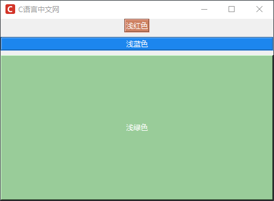
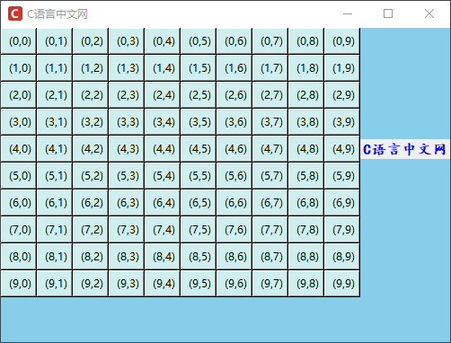
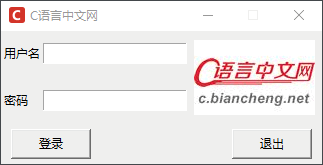

Tkinter布局管理器（三种方法详解）
当我们在开发一个 GUI 程序的时候，布局管理发挥着非常重要的作用，它指的是通过管理控件在窗口中的位置（排版），从而实现对窗口和控件布局的目的。
一个优秀的图形用户界面，更像是艺术家的作品，它会给用户非常良好的感官体验，因此布局管理不单单是枯燥的程序代码，更需要以“美”的角度去审视每一个细节，这才是学习布局管理的“不二法门”。Tkinter 提供了一系列布局管理的方法和容器控件，通过对这些内容的学习，您将掌握如何使用不同的方法完成界面布局。
Tkinter 提供了三种常用的布局管理器，分别是 pack()、grid() 以及 place()，如下表所示：
上述三种方法适用于 Tkinter 中的所有控件，在讲解前面内容时，对其中一些方法已经做了相关的介绍，比如 pack() 和 grid()。在本节会对上述三个方法的应用场景做更为详细的介绍。
下面看一组简单的使用示例：
grid() 方法相比 pack() 方法来说要更加灵活，以网格的方式对组件进行布局管理，让整个布局显得非常简洁、优雅。如果说非要从三个布局管理器中选择一个使用的话，那么我推荐大家使用 grid() 方法。
下面看一组有关 grid() 函数的简单的示例：
当使用 grid 函数布局的时，其实就是为各个控件指定行号、列号的过程，我们不需要为每个单元格指定大小，因为 grid 会为每个单元格自动设置一个适合的尺寸。
下面通过 grid() 布局管理器制作一个简易的登录界面，代码如下所示：
下面对 place 布局管理器的常用属性做相关介绍：
通过上述描述我们知道，

图4：place()布局管理器
一个优秀的图形用户界面，更像是艺术家的作品，它会给用户非常良好的感官体验，因此布局管理不单单是枯燥的程序代码，更需要以“美”的角度去审视每一个细节，这才是学习布局管理的“不二法门”。Tkinter 提供了一系列布局管理的方法和容器控件，通过对这些内容的学习，您将掌握如何使用不同的方法完成界面布局。
Tkinter 提供了三种常用的布局管理器，分别是 pack()、grid() 以及 place()，如下表所示：
| 方法 | 说明 |
|---|---|
| pack() | 按照控件的添加顺序其进行排列，遗憾的是此方法灵活性较差 |
| grid() | 以行和列（网格）形式对控件进行排列，此种方法使用起来较为灵活 |
| place() | 可以指定组件大小以及摆放位置，三个方法中最为灵活的布局方法 |
上述三种方法适用于 Tkinter 中的所有控件，在讲解前面内容时，对其中一些方法已经做了相关的介绍，比如 pack() 和 grid()。在本节会对上述三个方法的应用场景做更为详细的介绍。
pack()
pack() 是一种较为简单的布局方法，在不使用任何参数的情况下，它会将控件以添加时的先后顺序，自上而下，一行一行的进行排列，并且默认居中显示。pack() 方法的常用参数如下所示：| 属性 | 说明 |
|---|---|
| anchor | 组件在窗口中的对齐方式，有 9 个方位参数值，比如"n"/"w"/"s"/"e"/"ne"，以及 "center" 等（这里的 e w s n分别代表，东西南北） |
| expand | 是否可扩展窗口，参数值为 True（扩展）或者 False（不扩展），默认为 False，若设置为 True，则控件的位置始终位于窗口的中央位置 |
| fill | 参数值为 X/Y/BOTH/NONE，表示允许控件在水平/垂直/同时在两个方向上进行拉伸，比如当 fill = X 时，控件会占满水平方向上的所有剩余的空间。 |
| ipadx,ipady | 需要与 fill 参数值共同使用，表示组件与内容和组件边框的距离（内边距），比如文本内容和组件边框的距离，单位为像素(p)，或者厘米(c)、英寸(i) |
| padx,pady | 用于控制组件之间的上下、左右的距离（外边距），单位为像素(p)，或者厘米(c)、英寸(i) |
| side | 组件放置在窗口的哪个位置上，参数值 'top','bottom','left','right'。注意，单词小写时需要使用字符串格式，若为大写单词则不必使用字符串格式 |
下面看一组简单的使用示例：
from tkinter import *
win = Tk()
win.title("C语言中文网")
win.geometry('450x300+300+300')
win.iconbitmap('C:/Users/Administrator/Desktop/C语言中文网logo.ico')
lb_red = Label(win,text="红色",bg="Red",fg='#ffffff',relief=GROOVE)
# 默认以top方式放置
lb_red.pack()
lb_blue = Label(win,text="蓝色",bg="blue",fg='#ffffff',relief=GROOVE)
# 沿着水平方向填充，使用 pady 控制蓝色标签与其他标签的上下距离为 5 个像素
lb_blue.pack(fill=X,pady='5px')
lb_green = Label(win,text="绿色",bg="green",fg='#ffffff',relief=RAISED)
# 将 黄色标签所在区域都填充为黄色，当使用 fill 参数时，必须设置 expand = 1，否则不能生效
lb_green.pack(side=LEFT,expand=1,fill = BOTH)
win.mainloop()
程序运行结果：

图1：pack()布局管理
图1：pack()布局管理
grid()
grid() 函数是一种基于网格式的布局管理方法，相当于把窗口看成了一张由行和列组成的表格。当使用该 grid 函数进行布局的时，表格内的每个单元格都可以放置一个控件。，从而实现对界面的布局管理。注意：这里的所说的“表格”是虚拟出来，目的是便于大家理解，其实窗体并不会因为使用了 gird() 函数，而增加一个表格。
grid() 函数的常用参数如下所示：| 属性 | 说明 |
|---|---|
| column | 控件位于表格中的第几列，窗体最左边的为起始列，默认为第 0 列 |
| columnsapn | 控件实例所跨的列数，默认为 1 列，通过该参数可以合并一行中多个领近单元格。 |
| ipadx,ipady | 用于控制内边距，在单元格内部，左右、上下方向上填充指定大小的空间。 |
| padx,pady | 用于控制外边距，在单元格外部，左右、上下方向上填充指定大小的空间。 |
| row | 控件位于表格中的第几行，窗体最上面为起始行，默认为第 0 行 |
| rowspan | 控件实例所跨的行数，默认为 1 行，通过该参数可以合并一列中多个领近单元格。 |
| sticky | 该属性用来设置控件位于单元格那个方位上，参数值和 anchor 相同，若不设置该参数则控件在单元格内居中 |
grid() 方法相比 pack() 方法来说要更加灵活，以网格的方式对组件进行布局管理，让整个布局显得非常简洁、优雅。如果说非要从三个布局管理器中选择一个使用的话，那么我推荐大家使用 grid() 方法。
这里有一点需要大家要特别注意，在一个程序中不能同时使用 pack() 和 grid() 方法，这两个方法只能二选一，否则程序会运行错误。
下面看一组有关 grid() 函数的简单的示例：
from tkinter import *
#主窗口
win = Tk()
win.config(bg='#87CEEB')
win.title("C语言中文网")
win.geometry('500x350+300+300')
win.iconbitmap('C:/Users/Administrator/Desktop/C语言中文网logo.ico')
#在窗口内创建按钮，以表格的形式依次排列
for i in range (10):
for j in range (10):
Button (win, text=" (" + str(i) + ","+ str(j)+ ")",bg='#D1EEEE') .grid(row=i,column=j)
# 在第5行第11列添加一个Label标签
Label(win,text="C语言中文网",fg='blue',font=('楷体',12,'bold')).grid(row =4,column=11)
#开始窗口的事件循环
win. mainloop()
程序的运行结果：

图2：grid()布局管理
图2：grid()布局管理
当使用 grid 函数布局的时，其实就是为各个控件指定行号、列号的过程，我们不需要为每个单元格指定大小，因为 grid 会为每个单元格自动设置一个适合的尺寸。
下面通过 grid() 布局管理器制作一个简易的登录界面，代码如下所示：
import tkinter as tk
from tkinter import messagebox
root = tk.Tk()
root.title("C语言中文网")
root.iconbitmap('C:/Users/Administrator/Desktop/C语言中文网logo.ico')
root.resizable(0,0)
tk.Label(root, text="用户名").grid(row=0, sticky="w")
tk.Label(root, text="密码").grid(row=1, sticky="w")
tk.Entry(root).grid(row=0, column=1)
tk.Entry(root, show="*").grid(row=1, column=1)
# 加载图片LOGO,注意这里是gif格式的图片
photo = tk.PhotoImage(file="C:/Users/Administrator/Desktop/1.gif")
tk.Label(root, image=photo).grid(row=0, column=2, rowspan=2, padx='4px', pady='5px')
# 编写一个简单的回调函数
def login():
messagebox.showinfo('欢迎来到C语言中文网')
# 使用grid()函数来布局，并控制按钮的显示位置
tk.Button(root, text="登录", width=10, command=login).grid(row=3, column=0, columnspan=2,sticky="w", padx=10, pady=5)
tk.Button(root, text="退出", width=10, command=root.quit).grid(row=3, column=1, columnspan=2,sticky="e", padx=10, pady=5)
# 开启事件主循环
root.mainloop()
程序运行结果：

图3：grid()布局管理
图3：grid()布局管理
place()
与前两种布局方法相比，采用 place() 方法进行布局管理要更加精细化，通过 place() 布局管理器可以直接指定控件在窗体内的绝对位置，或者相对于其他控件定位的相对位置。下面对 place 布局管理器的常用属性做相关介绍：
| 属性 | 说明 |
|---|---|
| anchor | 定义控件在窗体内的方位，参数值N/NE/E/SE/S/SW/W/NW 或 CENTER，默认值是 NW |
| bordermode | 定义控件的坐标是否要考虑边界的宽度，参数值为 OUTSIDE（排除边界） 或 INSIDE（包含边界），默认值 INSIDE。 |
| x、y | 定义控件在根窗体中水平和垂直方向上的起始绝对位置 |
| relx、rely |
1. 定义控件相对于根窗口（或其他控件）在水平和垂直方向上的相对位置（即位移比例），取值范围再 0.0~1.0 之间 2. 可设置 in_ 参数项，相对于某个其他控件的位置 |
| height、width | 控件自身的高度和宽度（单位为像素） |
| relheight、relwidth | 控件高度和宽度相对于根窗体高度和宽度的比例，取值也在 0.0~1.0 之间 |
通过上述描述我们知道，
relx和rely参数指定的是控件相对于父组件的位置，而relwidth和relheight参数则是指定控件相对于父组件的尺寸大小。注意：这里父组件指的是当前可操作控件的上层组件，比如在没有使用容器控件（frame）的窗体中，控件的父组件就是主窗口本身，在《Tkinter布局管理容器控件》一节会做针对性介绍。
上述表格中关于距离位置的参数容易产生“疑惑”，下面通过一组简单的示例来进一步说明：
from tkinter import *
#主窗口
win = Tk()
win.title("C语言中文网")
win.iconbitmap('C:/Users/Administrator/Desktop/C语言中文网logo.ico')
#创建一个frame窗体对象，用来包裹标签
frame = Frame (win, relief=SUNKEN, borderwidth=2, width=450, height=250)
# 在水平、垂直方向上填充窗体
frame. pack (side=TOP, fill=BOTH, expand=1)
# 创建 "位置1"
Label1 = Label ( frame, text="位置1",bg='blue',fg='white')
# 使用 place,设置第一个标签位于距离窗体左上角的位置（40,40）和其大小（width，height）
# 注意这里（x,y）位置坐标指的是标签左上角的位置（以NW左上角进行绝对定位，默认为NW）
Label1.place (x=40,y=40, width=60, height=30)
# 设置标签2
Label2 = Label (frame, text="位置2",bg='purple',fg='white')
# 以右上角进行绝对值定位，anchor=NE，第二个标签的位置在距离窗体左上角的(180，80)
Label2.place(x=180,y=80, anchor=NE, width=60, height=30)
# 设置标签3
Label3 = Label (frame, text="位置3",bg='green',fg='white')
# 设置水平起始位置相对于窗体水平距离的0.6倍，垂直的绝对距离为80，大小为60，30
Label3.place(relx=0.6,y=80, width=60, height=30)
# 设置标签4
Label4 = Label (frame, text="位置4",bg='gray',fg='white')
# 设置水平起始位置相对于窗体水平距离的0.01倍，垂直的绝对距离为80，并设置高度为窗体高度比例的0.5倍，宽度为80
Label4.place(relx=0.01,y=80,relheight=0.4,width=80)
#开始事件循环
win. mainloop()
程序运行结果：
图4：place()布局管理器
注意：在一个父组件中 place()方法可以与 grid() 方法混合使用，要与 pack() 进行区别。
关注公众号「站长严长生」，在手机上阅读所有教程，随时随地都能学习。内含一款搜索神器，免费下载全网书籍和视频。

微信扫码关注公众号